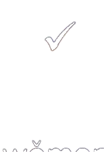
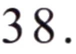

四
第四部分Part FourЧасть четвертая
第 36—40 题Questions 36-40Вопросы 36-40
请问 现在 几 点 了？★说话人 想 知道 什么？shíjiānA 时间míngziB 名字fángjiānhàoC 房间号
下雨 了， 我们 坐 出租车 回家 吧。★说话人 想 怎么 回家？kāichēA 开车zuò fēijīB 坐 飞机zuò chūzūchēC 坐 出租车
我 儿子 今年 16 岁 了， 正在 上 中学。★说话人 的 儿子 是：xiǎoxuéshēngA 小学生zhōngxuéshēngB 中学生dàxuéshēngC 大学生
小猫 和 小狗 都 在 房间 外 睡觉 呢。★小狗 在：zhuōzi xiàA 桌子 下fángjiān liB 房间 里fángjiān wàiC 房间 外
我 同学 在 这个 学校 工作 很多 年 了， 你 有 问题 可以 问 他。★说话人 的 同学 在 哪儿 上班？fàndiànA 饭店yīyuànB 医院xuéxiàoC 学校
这个 小朋友 写字 真 好看。★那个 小朋友：míngzi hǎotīngA 名字 好听xiě zì hǎokànB 写字 好看zhèngzài dúshūC 正在 读书